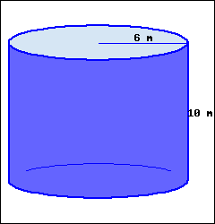

This problem is one that Portland Community College has donated to the Open Problem Library.

-
This cylinder’s volume, in terms of \(\pi\text{,}\) is .
-
This cylinder’s volume, rounded to the hundredth place, is .
Solution.
A cylinder’s volume formula is \(V= (\text{base area}) \cdot \text{height}\text{.}\) A cylinder’s base is a circle, with its area formula \(A = \pi r^{2}\text{.}\)
Putting together these two formulas, we have a cylinder’s volume formula:
\(\displaystyle{ V= \pi r^{2} h }\)
Throughout these computations, all quantities have units attached, and we only show them in the final step.
-
Using the volume formula, we have:\(\displaystyle{\begin{aligned} V \amp = \pi r^{2} h \\ \amp = \pi \cdot 6^{2} \cdot 10 \\ \amp = \pi \cdot 360 \\ \amp = 360 \pi \textrm{ m}^3 \end{aligned}}\)Don’t forget the volume unit \(\textrm{m}^3\text{.}\)
-
To find the decimal version, we replace \(\pi\) with its decimal value, and we have:\(\displaystyle{\begin{aligned}[t] V\amp = 360 \pi \\ \amp \approx 360 \cdot 3.14\ldots \\ \amp \approx {1130.97\ {\rm m^{3}}} \end{aligned}}\)Don’t forget the volume unit \(\textrm{m}^3\text{.}\)